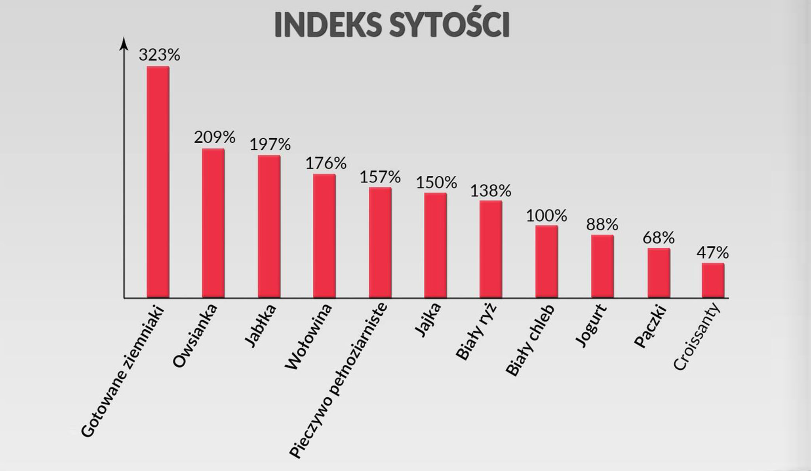

Początkujący powinien celować w przybieraniu na wadzę od 1kg do 2kg miesięcznie. Także w skali tygodnia daje to od 0.25kg do 0.5kg ŚREDNIEJ WAGI WIĘCEJ. (czyli ok. 250-500 kcal surplusu dziennie). Niestety waga może zależeć od wielu różnych czynników. Waga również może stać w miejscu, ale KOMPOZYCJA ciała może się zupełnie zmienić. Czyli palimy tłuszcz i budujemy mięśnie. Jest to bardzo prawdopodobny scenariusz na początku. Dlatego najważniejszym czynnikiem jest SIŁA na TRENINGU. Jeśli jest "progres" to znaczy, że idziemy w dobrym kierunku.
Jeśli w ciągu tygodnia:
1. Waga stoi, obwód pasa stoi, siła na treningu rośnie - tutaj zostaw kalorie, albo dodaj
200kcal jeśli nie masz problemu z ich przejedzeniem. Twoja decyzja :)
2. Waga rośnie w przedziale 0.25-0.5kg tygodniowo, obwód pasa stoi, siła na treningu
rośnie - nic nie zmieniaj! Jest bardzo dobrze;
3. Waga rośnie w przedziale 0.25-0.5kg tygodniowo, obwód pasa rośnie, siła na treningu
rośnie - jest dobrze, nic nie zmieniaj;
4. Waga rośnie w przedziale 0.25-0.5kg tygodniowo, obwód pasa rośnie, siła na treningu
stoi/spada - dokonaj zmian w planie treningowym;
5. Waga rośnie, o więcej niż 0.5kg tygodniowo - odejmij 200 kcal. (jeśli rośnie dużo
więcej np. 1kg, to odejmij 500 kcal, zgodnie z zasadą 0.5kg = 500 kcal.)
6. Waga spada, obwód pasa spada, niezależnie od siły na treningu - dodaj 500 kcal*
* (jeśli spada o 0.25kg tygodniowo, to dodaj od razu +500, jeśli o 0.5kg tygodniowo to dodaj 700 kcal. Jako, że 0.5kg mniej = 500 kcal deficytu, a chcemy celować w ok. 200 surplusu 500 kcal+ 200 kcal= 700 kcal)
Wytyczne te podane są dla zmian tygodniowych, ale nie wprowadzaj zmian zbyt często. Dokonuj kolejnych pomiarów, wyciągnij średnią wagę i wprowadzaj zmiany zgodnie z tymi założeniami. Co tydzień obliczaj średnią wagę, co 2 tygodnie pomiary i raz na miesiąc zdjęcia. Zmiany możesz dokonywać raz na 1-2 tygodnie. Pamiętaj, że zbyt częste zmiany będą powodować, że nie poznasz reakcji swojego organizmu. Dlatego gdy jest dobrze - nie kombinuj!
Zależy co Ci bardziej odpowiada. Jeśli masz problem z nabijaniem tłuszczy, to możesz podbić kalorie w całości z węglowodanów. Jeśli wolisz tłuszcze, to zwiększ ich podaż. Generalnie trzymaj białko na względnie stałym poziomie (ok. 2g na kilogram masy ciała), oscyluj w granicach 25-40% tłuszczy w diecie i reszta zapotrzebowania to węglowodany. Górny pułap tłuszczu możesz przyjąć gdy będzie Ci ciężko przejeść kalorie. Wtedy będziesz miał mniej objętościowe posiłki. Nadal najważniejsze będą ogólne kalorie i białko w ciągu dnia.
Część ludzi będzie miała problem z przybieraniem wagi i przejedzeniem dużej ilości pożywienia. Ta sytuacja związana jest z dużą aktywnością i kolokwialnie mówiąc " szybkim metabolizmem", a raczej po prostu większą aktywnością którą mają. Rozwiązaniem jest jeść więcej, podbijać kalorie i dokładnie to kontrolować. W pewnym momencie tych kalorii może być na prawdę sporo, dlatego tutaj porady jak je przejeść:
1. Mniej objętościowe jedzenie. Zwracaj uwagę, żeby jeść produkty mniej "gęste kaloryczne". Zobacz tą tabelkę:
2. Produkty o dużym indeksie sytości ciężej Ci będzie przejeść, dlatego sprawdzaj tę informację i na jej podstawie wprowadzaj zmiany w jadłospisie.
3. Nie pij wody do posiłku - napij się dopiero po;
4. Nie musisz jeść w 100% czysto, możesz dobijać kalorie produktami rekreacyjnymi np. słodyczami, chipsami, w granicach rozsądku. Jeśli kalorii masz naprawdę dużo(ponad 4000 i więcej), to nawet proporcję 50/50 będą ok;
5. Możesz spożywać kalorie w płynie, łatwiej Ci będzie dobić zapotrzebowanie. np. gainery/ soki, koktajle typu : banan z mlekiem i masłem orzechowym.
6. Możesz podjadać między posiłkami przekąski np. orzechy, masło orzechowe;
7. Spożywaj więcej posiłków w ciągu dnia, zacznij od śniadania rano, jedz co 2-3h. Dzięki temu jesz częściej, ale mniej, więc łatwiej Ci upchnąć kalorie;
8. Możesz zmniejszyć podaż białka na 1.6 -1.8 g na kilogram masy ciała. Tyle wystarczy żeby budować mięśnie, a łatwiej Ci będzie przejeść posiłki. (białko to najbardziej sycący makroskładnik);
9. Jedz różnorodnie i smacznie. Łatwiej jest zjeść coś co Ci odpowiada;
10. Nie baw się jedzeniem, zjedz cały posiłek od razu;
11. Możesz rotować kaloriami, tzn. ustalić jeden dzień niżej, przez co wygłodzisz się trochę i będzie Ci łatwiej przejeść kalorie w dzień kolejny. Taki jeden dzień nic nie zmienia, nadal liczy się progres na treningu i bilans tygodniowy; (jeśli chcesz, zobacz więcej w dziale FAQ o rotowaniu kaloriami)
12. Rób Minicuty - więcej w kolejnym dziale; będzie to dla Ciebie rodzaj odpoczynku od jedzenia. Wyższy BF, to też większa sytość po posiłku, dlatego zbicie kilogramów na miniucie to dobre rozwiązanie.
13. Nie podbijaj aktywności, bo to tylko zwiększa Twoje zapotrzebowanie, nic na silę - nie rób cardio.;
14. Zawsze oscyluj w przedziale 10-15% tkanki tłuszczowej; (ze względu który był wcześniej)
15. Nie potrzebujesz ekstremalnie dużej nadwyżki, nawet 1kg na wadze miesięcznie to dobry wynik.
16. Zwiększ podaż tłuszczu, nawet do 40% z diety. Jedzenie będzie wtedy mniej objętościowe i łatwiej Ci będzie je przejeść.